El ciclo hidrológico o también llamado coloquialmente el ciclo del agua, es el proceso por el cual el agua tiene una serie de cambios (los tres estados de la materia: solido, líquido y gaseoso) y esto forma la hidrosfera, además que sirve para la circulación y renovación de este elemento químico que es el H2O (agua). Este ciclo comienza con la evaporación del agua de los ríos, mares, lagunas, etc. Después ese vapor se va convirtiendo en gotas de agua, que a su vez se forman las nubes (acumulación de gotas de agua), después de formar las nubes cae esta agua en forma de lluvia (aunque a veces la temperatura cuando es baja cae en forma de granizo o de nieve), algún porcentaje de esta se filtra por el subsuelo renovando los ríos, mares y lagunas, y al final empieza otra vez el ciclo.
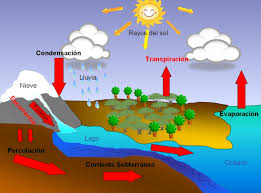
El ciclo del agua se inicia cuando una parte del vapor de agua de la atmósfera se condensa y precipita (ya sea en forma de agua o nieve). Parte de la precipitación se evapora en caída y parte es interceptada por la vegetación, edificios...etc.
El agua que alcanza la superficie parte queda retenida en forma de almacenamientos superficiales y vuelve a la atmósfera en forma de vapor y otra parte circula por la superficie (escorrentía superficial) y se concentra en canales de drenaje que desembocan en el mar o se infiltra en el terreno. Por último, parte de la precipitación se infiltra en el terreno rellenando poros o fisuras del medio. Buena parte de la infiltración no desciende hasta la parte saturada quedándose en la zona no saturada donde vuelve a la atmósfera por evaporación y/o transpiración de las plantas.
El flujo del agua en el ciclo es muy irregular tanto en el espacio como en el tiempo, por lo que algunos de los componentes del ciclo (infiltración y evapotranspiración) son muy variables. La acción humana también produce cambios; la construcción de presas y canales por ejemplo o la deforestación y repoblación, producen cambios significativos en el ciclo.
Constituye uno de los circuitos biogeoquímicos más importantes del planeta Tierra, en el cual el agua sufre una serie de desplazamientos y transformaciones físicas, por las cuales va atravesando los tres estados de la materia: líquido, sólido y gaseoso.
En el ciclo hidrológico intervienen diversos factores ambientales, como el viento y la energía solar (siendo esta última la principal impulsora de este). Como todo ciclo, no inicia realmente en ningún punto determinado, sino que se trata de una continuidad de procesos que se repiten sucesivamente. Solo a efectos de poder explicarlo, se le pone un “punto de inicio”.
Proceso
El 70% de la superficie del planeta está cubierta por H2O y el 96,5% pertenece a los océanos que contribuyen, por su salinidad, al ciclo del calcio. se encuentra en el planeta está presente en 3 estados distintos como son el líquido, el sólido y el gaseoso, pasando de unos a otra merced a procesos como la evaporación o las precipitaciones del agua que se contiene en las nubes, sin que ello cause variaciones en la cantidad total del elemento vital de la Tierra.
El ciclo hidrológico se lleva a cabo de dos maneras:
- Ciclo interno
Consiste en la formación del agua a nivel magmático mediante reacciones químicas. El H2O así formada puede salir a la superficie como como aguas termales o erupciones volcánicas. En estas últimas se libera de azufre y a la atmósfera.

- Ciclo externo
Comienza con la evaporación, en océanos, mares,ríos y lagos, entre otros. También por la transpiración de las plantas y la sudoración de los animales, que aportan agua que se evapora. El vapor se eleva a las nubes y se enfría con la ayuda de las bajas temperaturas, condensándose en estas masas nubosas y transformándose en H2O.

Posteriormente, las gotas producidas por efecto de la condensación se unen formando nubes que, por su tamaño y peso, terminan precipitando sobre la superficie terrestre en forma líquida o sólida (como granizo o nieve debido a las bajas temperaturas).
Una vez el H2O ha llegado a la superficie, sus destinos pueden ser varios. Uno de ellos es su uso en los procesos orgánicos de los seres vivos, otra parte se infiltra a través de los poros terrestres, colocándose en depósitos subterráneos y, por último, mediante las escorrentías que provocan el deslizamiento del agua a través de las distintas superficies hasta llegar nuevamente a mares, lagos y ríos.
Etapas
El ciclo del agua se compone de las siguientes etapas sucesivas y simultáneas, que se repiten sin cesar y se compenetran unas con otras:
- Evaporación
- Condensación
- Precipitación
- Filtración
- Escurrimiento o Escorrentía
- Circulación Subterránea
- Fusión
- Solidificación
A continuación la explicación cada etapa.
- Evaporación
El cambio del agua de estado líquido a gaseoso, o vapor. La premisa para que suceda la evaporación en el ciclo hídrico (o lo que es igual, el fenómeno opuesto a la condensación) es que exista calor (energía). Dicha energía es utilizada para romper los enlaces que mantienen a las moléculas de consistencia acuática unidas.
Por este motivo es más fácil que el H2O se evapore en el punto de ebullición (equivalente a la temperatura de evaporación del agua), es decir, a 100 ºC o 212 ºF y, sin embargo, se evapora con mayor lentitud en el punto de congelamiento.
Cuando la humedad relativa del aire es del 100% (punto de saturación), el agua no puede continuar evaporándose. El proceso que estamos analizando toma calor del ambiente, razón por la que el agua que es evaporada de la piel durante la transpiración refresca los organismos.
La evaporación es una parte esencial en este ciclo. La energía del Sol provoca que se evapore el H2O de océanos y lagos, así como la humedad del suelo y otras fuentes acuáticas. Este fenómeno, junto con la transpiración (que alude a la evaporación en el interior de la estoma de la planta), reciben en hidrología el nombre de conjunto de evapotranspiración.
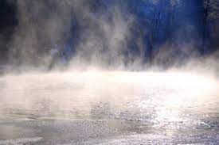
- Condensación
El cambio del agua de estado gaseoso a líquido. A través de este proceso el vapor de agua del aire se transforma en agua líquida. La importancia de la condensación en este ciclo radica en la formación de nubes. Las nubes pueden producir precipitaciones, que constituyen el principal modo de que el H2O vuelva a la Tierra.
El fenómeno de la condensación es también el responsable de la niebla o del empañamiento que sufren los cristales de nuestros lentes cuando pasamos de una estancia fría a otra más cálida, así como de esas gotas que se forman en el interior de las ventanas en días gélidos.
Hasta en las jornadas en las que el cielo se presenta totalmente despejado de nubes, el líquido elemento sigue presente, tanto en forma de vapor de agua, como de pequeñas gotas cuyo reducido tamaño impide que sean vistas.
Las moléculas de H2O se combinan con partículas diminutas de polvo, humo y sales, formando gotas de nube. Esta combinación termina por hacer que dichas gotas crezcan en tamaño, dando lugar a la formación de nubes. Es entonces cuando la posibilidad de precipitación entra en juego.
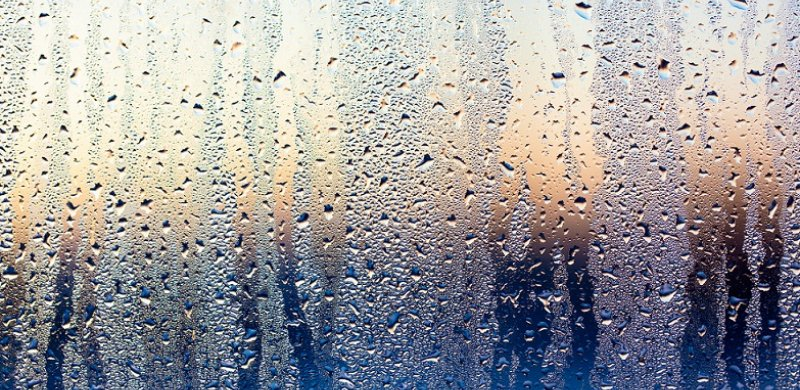
- Precipitación
Cuando las gotas de agua contenidas en las nubes son ya lo suficientemente grandes y pesadas, rompen su estado de equilibrio y se producen las lluvias o precipitaciones. Por lo general, el agua cae en forma líquida, pero en ciertas regiones y condiciones climáticas donde las temperaturas son menores, puede hacerlo en forma más o menos sólida, como nieve, escarcha o granizo.
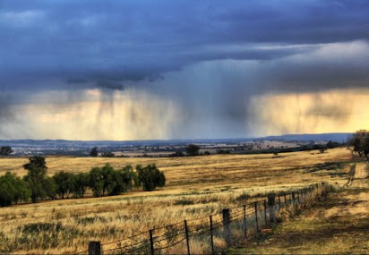
- Filtración
El agua que alcanza el suelo terrestre penetra por ella y se transforma en agua subterránea. La cantidad de agua que se filtra por la superficie depende de distintos factores como la permeabilidad del suelo, la pendiente y la cobertura vegetal de la región. El agua infiltrada puede luego volver a la atmósfera por evaporación o ser incorporada a distintos cuerpos de agua superficiales.
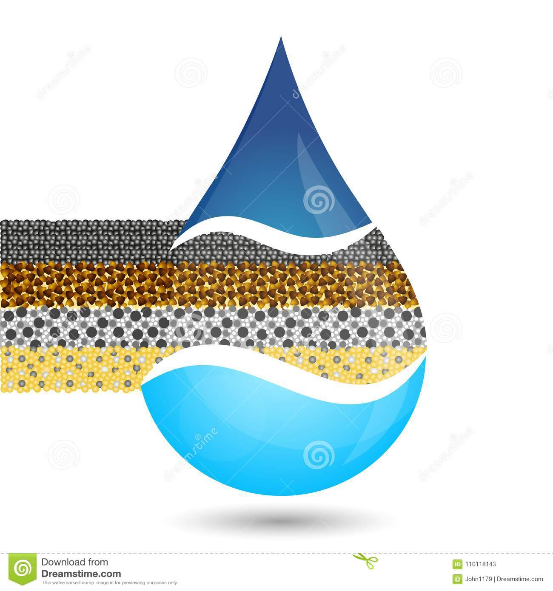
- Escurrimiento o Escorrentía
El agua que alcanza el suelo terrestre penetra por ella y se transforma en agua subterránea. La cantidad de agua que se filtra por la superficie depende de distintos factores como la permeabilidad del suelo, la pendiente y la cobertura vegetal de la región. El agua infiltrada puede luego volver a la atmósfera por evaporación o ser incorporada a distintos cuerpos de agua superficiales.
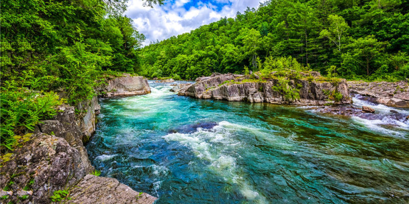
- Circulación Subterránea
Al igual que la escorrentía, el agua se mueve a favor de la gravedad, hacia donde está inclinado el suelo. En este caso, el agua se filtra a través de los poros de la tierra y luego se desplaza por el subsuelo, en ocasiones incluso a través de rocas permeables.
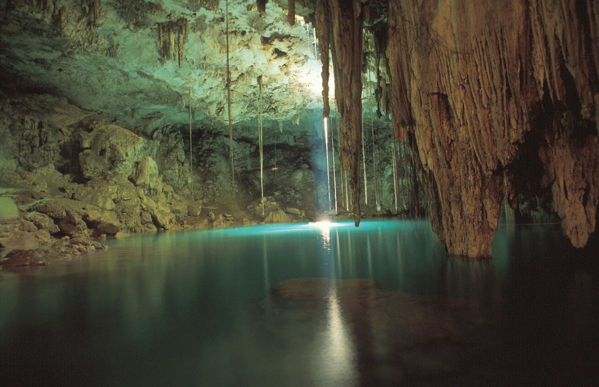
- Fusión
Se refiere a la transformación del agua desde su estado sólido (hielo o nieve) a líquido, cuando se produce el deshielo. Así, el derretimiento de los hielos en las estaciones cálidas, como ocurre en los polos y en las regiones continentales heladas, devuelve el agua a su punto inicial del ciclo.
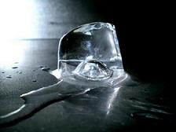
- Solidificación
Consiste en el pasaje del agua desde el estado líquido a sólido y ocurre cuando la temperatura es menor a 0 ºC. El proceso de solidificación puede darse en las nubes, dando lugar a la formación de nieve o granizo y también sobre las superficies de lagos y ríos, cuando las temperaturas son lo suficientemente bajas.
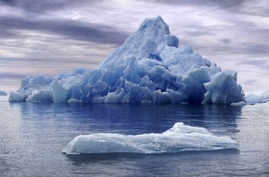
- El ciclo del agua es fundamental para el mantenimiento de la vida en la Tierra y para el sustento de todos los ecosistemas terrestres.
- Determina la variación climática e interfiere en el nivel de los ríos, lagos, mares y océanos.
- Muchos seres vivos dependen de este pequeño suministro de agua dulce superficial y la falta de agua puede tener efectos severos en los ecosistemas.
Los seres humanos tienen la responsabilidad de preservar el buen funcionamiento del ciclo del agua, ya que la acción del hombre ha llevado a cambios climáticos y contaminación en la biosfera, poniendo en riesgo la distribución del agua y la vida en la Tierra.
Por supuesto, los humanos han desarrollado tecnologías que aumentan la disponibilidad de agua, entre ellas se encuentran la construcción de pozos para llegar al agua subterránea, el acopio de agua de lluvia y la desalinización para obtener agua dulce del océano. Aun así, hoy en día no siempre hay agua potable y segura disponible en muchas partes del mundo.
La mayor parte del agua de la tierra no circula muy rápido. El agua de los océanos, el agua subterránea y la que se encuentra en forma de hielo tiende a circular muy lentamente. Solo el agua superficial circula con rapidez.

El cilo hidrológico impulsa otros ciclos
El ciclo del agua es importante por sí mismo y los patrones de circulación del agua y la precipitación tienen grandes efectos en los ecosistemas de la tierra. Sin embargo, la lluvia y el escurrimiento superficial también tienen una función en la circulación de varios elementos, entre estos el carbono, el nitrógeno, el fósforo y el azufre. En particular, el escurrimiento superficial ayuda a estos elementos a moverse de los ecosistemas terrestres a los acuáticos.
Y ayudan a realizar los siguientes ciclos biogeoquímicos:
- Ciclo del nitrógeno
El ciclo del nitrógeno es un proceso biológico y abiótico mediante el cual se puede suministrar este elemento químico a los seres vivos (ya que no se puede utilizar el nitrógeno en su estado puro), a fin de que lo absorban del agua, aire o tierra.
Es un ciclo que se realiza en corto tiempo y es gaseoso.
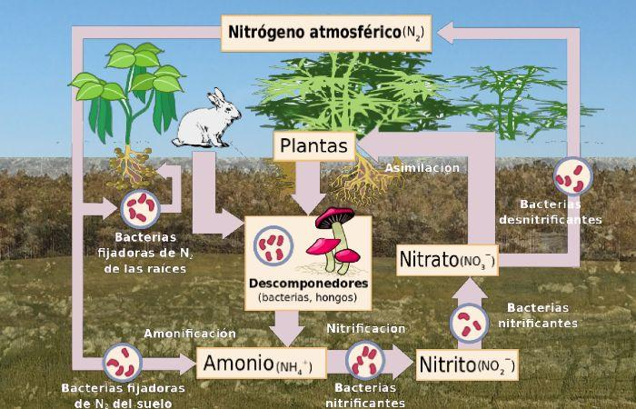
- Ciclo del carbono
El carbono es un elemento que se encuentra presente en la atmósfera, los océanos y en la tierra, y su ciclo es vital para que este elemento pueda circular a través de la tierra, los océanos y la atmósfera a fin de ser aprovechado por los seres vivos.
Este ciclo es uno de los más importantes para que se preserve el equilibrio de la biósfera, pues incluye procesos físicos, químicos y biológicos.
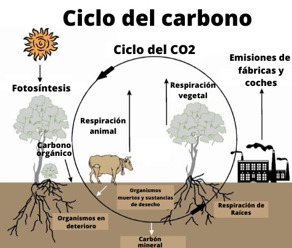
- Ciclo del azufre
Este ciclo biogeoquímico es considerado como uno de los más complejos porque el azufre, durante este proceso, debe pasar por diferentes estados de oxidación cuando se combina con el oxígeno.
En este ciclo, el azufre se incorpora en los vegetales para poder llegar a los consumidores primarios. Por otra parte, puede llegar a la atmósfera como dióxido de azufre y al agua una vez que se ha formado el ácido sulfúrico, que produce la lluvia ácida.
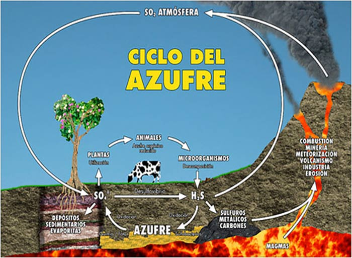
- Ciclo del oxígeno
El ciclo del oxígeno representa el proceso y las reacciones por las que pasa este elemento para poder circular en la atmósfera de la tierra. Es un ciclo complejo porque es un elemento que es utilizado y liberado por los seres vivos a través de diferentes procesos químicos.
El oxígeno (O2) en estado gaseoso y como gas carbono (CO2) es utilizado en la respiración de animales y plantas. Por su parte, los animales y seres humanos usamos y reciclamos continuamente el oxígeno para poder respirar y, por tanto, vivir.
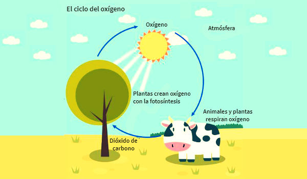
- Ciclo del fósforo
Es un ciclo muy importante por la escasa cantidad de fósforo que existe, en comparación con otros elementos. Este es un ciclo sedimentario y, por tanto, más lento, porque este elemento circula principalmente en el suelo y las aguas.
El fósforo es un elemento fundamental para el crecimiento de los ecosistemas, en especial en el acuático.
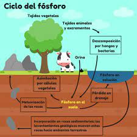
En una primera aproximación podemos decir que el balance hídrico adopta la siguiente expresión:
Entradas = Salidas +/- Variaciones de Almacenamiento.
Las entradas a la ecuación comprenden la precipitación total (P), como lluvia o nieve que va a alcanzar el terreno y los aportes de agua exterior al sistema, superficial (Ims) y subterránea (Ima).
Las salidas incluyen la evapotranspiración (ET) y los flujos superficiales (A) y subterráneo (F) que salen del territorio. La evapotranspiración comprende el volumen de agua utilizado por la vegetación (transpiración) y la que se evapora directamente del suelo y de la cubierta vegetal (evaporación).
Consecuentemente la ecuación del balance hídrico adopta la siguiente expresión:
P+ Ims + Ima – ET – A – F =0
Considerando que no haya importaciones exteriores al sistema y suponiendo el recurso superficial y subterráneo como único (aportación total At= A+F) la expresión queda como sigue:
P- ET= At
| Ciclo biogeoquímico |
Simbolo químico |
Ciclo del nitrogeno |
N2 |
Ciclo del carbono |
C |
Ciclo del azufre |
S |
Ciclo del oxigeno |
O2 |
Ciclo del fosforo |
P |
Aquí unos links de páginas y videos para reforzar la información
Visita Khanacademy
Visita Arcgis
Visita Ceupe
Visita este video
Visita este otro video
A continuación una página acerca de la prehistoria